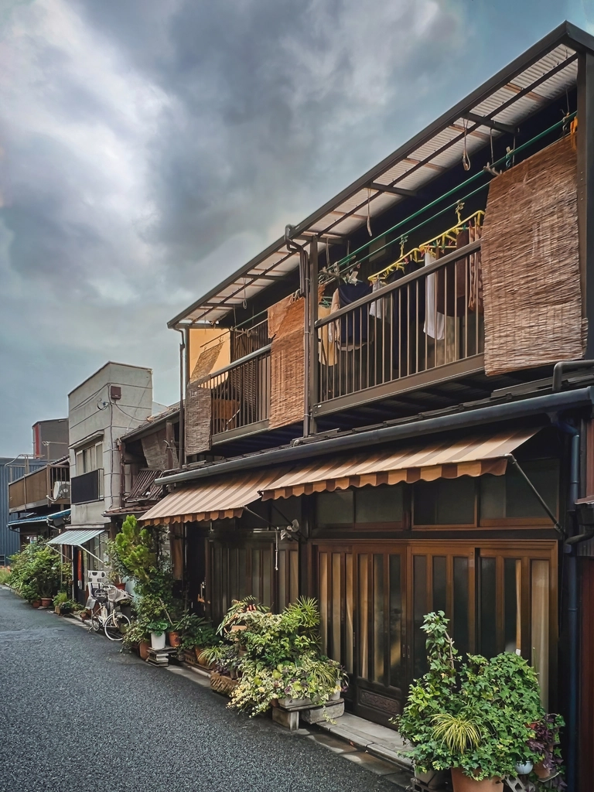

02
見つけた人だけが辿り着ける
大通りから一本、また一本と路地を折れた先。看板を目印に歩みを進めると、住宅地の静けさの中にふっと灯りが見えてきます。地元の方に教えてもらわなければ気づかないような、そんな奥まった場所にcafe茶豆はあります。
所在地は千葉県我孫子市布佐。詳しい道順やお車でお越しの際の目印などは、お電話にてお気軽にお問い合わせください。迷わず辿り着けるよう、丁寧にご案内いたします。

05
おしゃれな店内に、昭和の演歌が流れている
落ち着いた雰囲気に整えられた店内に流れているのは、昭和の演歌だったり、歌謡曲だったり、時にはまったく違うジャンルの一曲だったり。店主のセレクトによる選曲は、洗練された空間との意外な組み合わせで、訪れた方をふっと和ませてくれます。
そんな店主の人柄も、「優しい」「温かい」と評判です。肩の力を抜いて、ゆっくり過ごしていただける時間をご用意しています。
06
何度でも、通いたくなる
-
★★★★★
表面はサクサク、中はふんわり。窯出しならではの食感に感動しました。まじめな喫茶店の味わいのコーヒーとの相性も抜群。細い路地の先に見つけた、まさに隠れ家でした。
-
★★★★★
アツアツでやわらかい窯出しフレンチトーストに、冷たいバニラアイスの組み合わせが絶妙。店主さんもとても温かい方でした。毎月10・20・30日は500円で食べられる日があるそうです。
-
★★★★☆
昔はイタリアンのお店だったそうですが、今はフレンチトースト自慢のカフェに。おしゃれな店内なのに昭和の歌謡曲が流れていたり、洋食に味噌汁が付いてきたり、良い意味で予想を裏切ってくれる個性派カフェです。
-
★★★★★
日曜の午後にふらりと立ち寄りました。優しい音楽が流れる店内でゆったり過ごせて、また必ず来たくなる場所です。
07
かつてイタリアンだった店が、フレンチトーストの店になった
この場所は、以前はイタリアンレストランとして営業していました。今はその姿を変え、窯出しフレンチトーストを看板に据えたカフェとして、路地裏で静かに扉を開けています。
メニューは変わっても、一皿一皿を丁寧に届けたいという思いは変わりません。かつての洋食の記憶が、今の味わいのどこかに息づいているのかもしれません。
08
布佐の路地裏で、お待ちしています
cafe茶豆の所在地は、千葉県我孫子市布佐です。住宅地の路地を進んだ先にありますので、初めてお越しの際はお電話でお気軽に道順をお尋ねください。
営業時間・定休日は変更となる場合がございます。お手数ですがお電話にてご確認ください。
お電話でのお問い合わせ
04-7189-4833
今すぐ電話する 04-7189-4833Instagramは準備中です